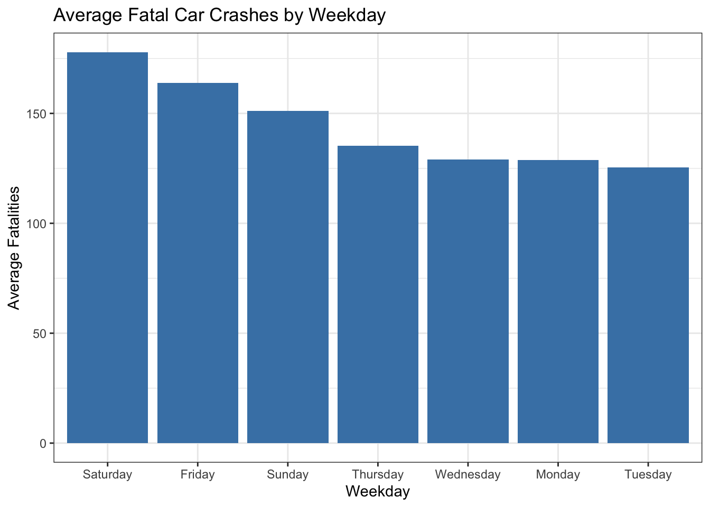
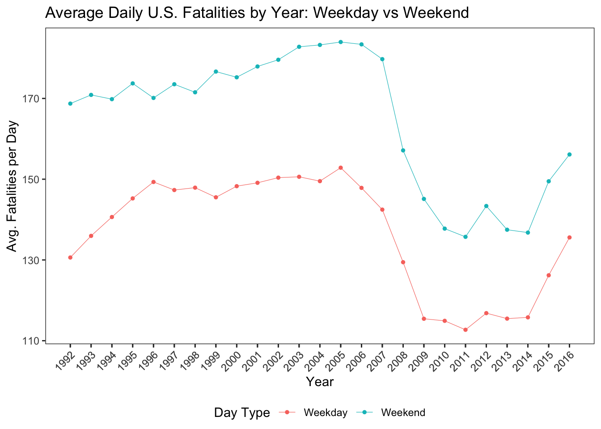
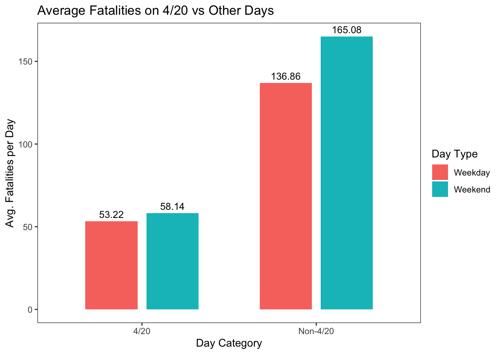
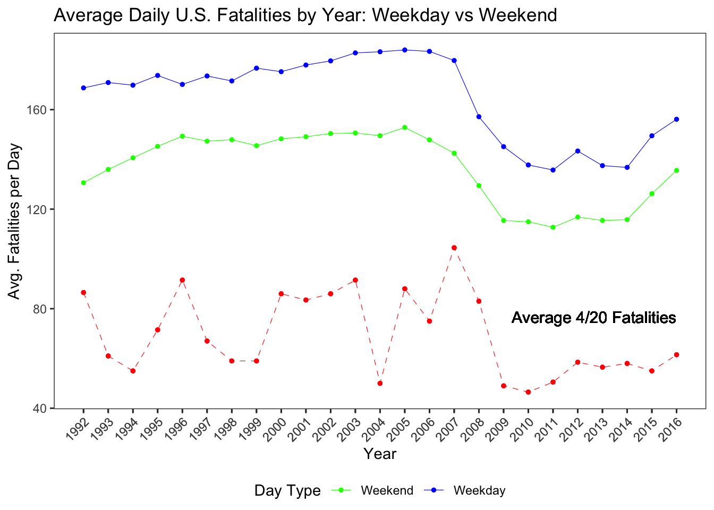
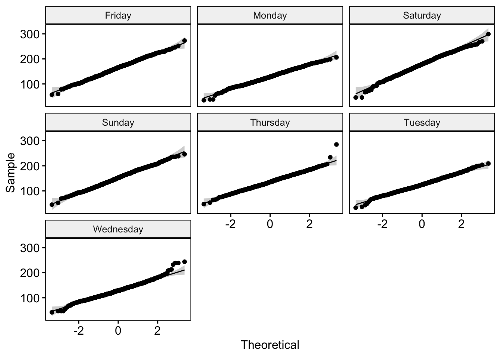

library(tidytuesdayR)
library(GWalkR)
library(tidyverse)Introduction
April 20th commonly known as “4/20” is an informal, globally recognized holiday celebrated by cannabis enthusiasts. In the United States in particular, the day features cultural events centered around marijuana use, public gatherings, education, and cannabis product trade fairs. The most active period typically falls between 4:20 PM and midnight, marking peak celebration hours.
As cannabis consumption becomes more mainstream especially in parts of the U.S., the Netherlands, and other regions where its use is legal or decriminalized public safety concerns have emerged. One of the most pressing questions is whether this unofficial holiday correlates with an increase in civil disobedience, particularly impaired driving and fatal car crashes in urban areas.
Previous studies have produced mixed results. For example, Harper and Palayew (2019) found no significant association between 4/20 and increased fatal crashes, while Staples and Redelmeier (2018) reported a noticeable spike in fatal traffic incidents on this date 12.
As part of the Tidy Tuesday data series, I explored this issue using several decades of U.S. traffic fatality data to gain deeper insight into the potential risks associated with 4/20 celebrations.
Key Questions
- Do fatal car crashes increase during the 4/20 celebration window (April 20th, 4:20 PM to 11:59 PM)?
- Are weekends more dangerous than weekdays when it comes to fatal traffic crashes?
- Are there noticeable patterns by season or day of the week in fatal crash data?
Using basic exploratory data analysis, visualization, and modeling, we shall run basic analysis on this data set. We start off by loading the packages and the data. The two tables (daily_accidents and daily_accidents_420) provide daily fatal crash counts, with the latter specifically identifying 4/20 dates.
We go ahead and extract the day of the week and month for each date to be able to analyze the temporal patterns in fatalities, latter on in the analysis.
# load data
tuesdata <- tidytuesdayR::tt_load('2025-04-22')
daily_accidents <- tuesdata$daily_accidents
daily_accidents_420 <- tuesdata$daily_accidents_420
# create days
daily_accidents$days <- weekdays(daily_accidents$date)
daily_accidents$months <- factor(months(daily_accidents$date))
daily_accidents_420$days <- weekdays(daily_accidents_420$date)
daily_accidents_420$months <- factor(months(daily_accidents_420$date))Now that we have the day variable we would like to check for the general trend of fatalities on the different days of the week? to do this we calculate the mean number of daily fatalities for each weekday to identify patterns.
# total accidents by day
weekday_summary <- daily_accidents_420 %>%
group_by(days) %>%
summarise(avg_fatalities = mean(fatalities_count, na.rm = TRUE)) %>%
arrange(desc(avg_fatalities))The bar plot illustrates the average number of fatal car crashes for each day of the week. From the chart, we observe that weekend days, particularly Saturday and Sunday, along with Friday, tend to have the highest average fatalities. This pattern likely reflects increased recreational travel, social activities, and potentially higher rates of bad driving during these days.
# average fatal car crashes
ggplot(weekday_summary,
aes(x = reorder(days, -avg_fatalities), y = avg_fatalities)) +
geom_bar(stat = "identity", fill = "steelblue") +
labs(x = "Weekday",
y = "Average Fatalities",
title = "Average Fatal Car Crashes by Weekday") +
theme_bw()
In contrast, the averages for Monday, Tuesday, Wednesday, and Thursday are noticeably lower and relatively similar to each other. While this difference is not directly explained by the dataset, one possible interpretation is that drivers may be more focused or cautious during the traditional workweek. However, it’s important to note that this is a speculative explanation and should not be taken as a conclusion drawn from the data itself, but rather as a contextual consideration that might warrant further investigation.
To understand how fatal car crashes have changed over time, we began by categorizing each day as either a weekday or weekend, and labeling April 20th (4/20) as a holiday. This allows us to structure the data in a way that enables meaningful comparisons between regular weekdays, weekends, and the 4/20 holiday.
# indicators for weekend/weekday and 4/20
daily_accidents <- daily_accidents %>%
mutate(year = year(date),
is_weekend = days %in% c("Saturday", "Sunday"))
daily_accidents_420 <- daily_accidents_420 %>%
mutate(days = weekdays(date),
year = year(date),
is_weekend = days %in% c("Saturday", "Sunday"),
holiday = ifelse(e420 == TRUE, "4/20", "Non-4/20"))
daily_accidents$label <- ifelse(daily_accidents$is_weekend, "Weekend", "Weekday")
daily_accidents_420$label <- ifelse(daily_accidents_420$is_weekend, "Weekend", "Weekday")Next, we calculated the average number of fatalities per day, grouped by year and day type (weekday or weekend). We then visualized this data using a line plot to observe trends across the years.
# average fatalities per day by year and label
year_fatal <- daily_accidents_420 %>%
group_by(year, label) %>%
summarise(avg_fatalities = mean(fatalities_count, na.rm = TRUE), .groups = 'drop')ggplot(year_fatal, aes(x = year, y = avg_fatalities, color = label)) +
geom_line(linewidth = 0.2) +
geom_point(size = 1) +
labs(title = "Average Daily U.S. Fatalities by Year: Weekday vs Weekend",
x = "Year",
y = "Avg. Fatalities per Day",
color = "Day Type") +
theme_test() +
scale_x_continuous(breaks = year_fatal$year,
labels = year_fatal$year) +
theme(axis.text.x = element_text(angle = 45, hjust = 1),
legend.position = "bottom")
The resulting plot shows several key patterns:
- Weekends consistently show higher average fatality rates than weekdays. This is consistent with expectations, as weekends are often associated with more travel, leisure activities, and potentially bad driving.
- From 1992 to around 2005, both weekday and weekend fatalities were relatively high.
- There was a decline in average daily fatalities from about 2005 to 2014, indicating a period of improved road safety.
- However, starting in 2014, the average fatalities began to increase again, and this trend continues in more recent years.
- Importantly, even during periods when overall fatalities declined, weekends still maintained higher averages compared to weekdays.
With this we can answer the question “Are weekends more dangerous than weekdays when it comes to fatal traffic crashes?” suggesting that weekends are consistently associated with a higher number of fatal crashes, regardless of the year.
We now shift our focus to a central question: Is April 20th (4/20) associated with a higher number of fatal car crashes compared to other days of the year? Given the cultural significance of 4/20 as a cannabis-focused celebration, it is reasonable to question whether increased substance use on this day contributes to increased crash rates.
To examine this, we grouped the dataset into two categories days that fall on 4/20 and all other calendar dates. Each of these groups was then subdivided based on whether the day was a weekday or a weekend. We calculated the average number of fatalities in each subgroup and visualized the results using a comparative bar chart.
# Compare 4/20 vs non-4/20
holiday_420 <- daily_accidents_420 %>%
group_by(holiday, label) %>%
summarise(avg_fatalities = mean(fatalities_count, na.rm = TRUE),
count = n(),
.groups = "drop")The plot reveals that fatal crash averages on 4/20 are actually lower than those on non-4/20 dates. This difference is especially pronounced on weekends, where one might expect the influence of recreational activity and bad driving to be higher. Contrary to popular assumptions, the data suggests that 4/20 does not experience a spike in fatal traffic incidents. In fact, the day tends to see slightly fewer fatalities on average.
# plot
ggplot(holiday_420, aes(x = holiday, y = avg_fatalities, fill = label)) +
geom_col(position = position_dodge(width = 0.7), width = 0.6) +
geom_text(aes(label = round(avg_fatalities, 2)),
position = position_dodge(width = 0.7),
vjust = -0.5, size = 3.5) +
labs(
title = "Average Fatalities on 4/20 vs Other Days",
x = "Day Category",
y = "Avg. Fatalities per Day",
fill = "Day Type") +
theme_test()
These observations challenge the widely held perception that cannabis-related events on 4/20 lead to more dangerous roads. While the results do not eliminate the possibility of localized risks or isolated incidents, the broader national pattern does not support the idea that 4/20 is a particularly deadly day for drivers. To deepen our understanding of how April 20th compares to other days in terms of fatal crashes over time, we plotted the trend of average daily fatalities across all years, distinguishing between weekdays (in green), weekends (in blue), and April 20th specifically (in red). This allowed us to show how 4/20 fatalities track against broader national trends on regular days.
year_fatal_420 <- daily_accidents_420 %>%
filter(month(date) == 4 & day(date) == 20) %>%
group_by(year = year(date)) %>%
summarise(average_420_fatalities = mean(fatalities_count, na.rm = TRUE), .groups = "drop")The resulting plot offers a clear comparison. Across most years, the red dashed line representing the average number of fatalities on April 20th consistently falls below both weekday and weekend trends. This reinforces our earlier observation that 4/20 is not associated with a surge in fatal crashes, despite the day’s cultural reputation. In fact, while fatal crashes tend to spike on weekends and occasionally fluctuate over the years, 4/20’s average remains relatively stable and often lower than typical weekend averages.
year_fatal_with_420 <- year_fatal %>%
left_join(year_fatal_420, by = "year")
# plot
ggplot(year_fatal_with_420, aes(x = year, y = avg_fatalities, color = label)) +
geom_line(size = 0.2) +
geom_point(size = 1) +
geom_line(aes(x = year, y = average_420_fatalities),
color = "red", linetype = "dashed", size = 0.2) +
geom_point(aes(x = year, y = average_420_fatalities),
color = "red", size = 1) +
labs(title = "Average Daily U.S. Fatalities by Year: Weekday vs Weekend",
x = "Year",
y = "Avg. Fatalities per Day",
color = "Day Type") +
theme_test() +
scale_color_manual(
values = c("Weekend" = "blue", "Weekday" = "green", "4/20 Average" = "red"),
labels = c("Weekend", "Weekday", "4/20 Average")) +
scale_x_continuous(breaks = year_fatal_with_420$year,
labels = year_fatal_with_420$year) +
theme(axis.text.x = element_text(angle = 45, hjust = 1),
legend.position = "bottom") +
geom_text(aes(x = max(year), y = max(average_420_fatalities),
label = "Average 4/20 Fatalities"),
color = "black",
size = 4,
hjust = 1,
vjust = 6.5)
This strengthens our conclusion: April 20th does not exhibit a pattern of elevated fatal traffic incidents over the years when compared to the national averages for both weekdays and weekends. It directly answers our initial research question about whether 4/20 sees an increase in fatal crashes, it does not. Instead, the data suggest that public fears around cannabis-related driving fatalities on this day may be overstated, at least when looking at national trends over several decades.
Following the exploratory trend analysis, we move into statistical modeling to test the impact of specific factors particularly weekends and the date April 20th (4/20) on the number of daily fatal traffic crashes. The goal here is to determine whether 4/20 is statistically associated with a significantly higher or lower risk of fatal crashes after accounting for other known influences like weekends, which we’ve already seen tend to have higher fatality rates.
Before applying any model, we first examine whether the number of daily fatalities (fatalities_count) meets assumptions required for common parametric tests. We start by checking normality across weekdays using QQ plots. The QQ plots show to some extent we can assume that the deviations from the normal distribution are not so off, which implies that daily fatalities are can be said to be normally distributed across days of the week.
library(lubridate)
library(car)
library(ggpubr)
# check normality of each weekday group
ggqqplot(daily_accidents_420,
x = "fatalities_count",
facet.by = "days")
We would also want to complement this, we use Levene’s Test to check for homogeneity of variances across the weekday groups. Levene’s Test indicates that the assumption of equal variances is violated (significant p-value), meaning the variability in fatal crashes differs across days. This rules out traditional parametric methods.
# Levene's Test for equal variances
leveneTest(fatalities_count ~ days, data = daily_accidents_420)Levene's Test for Homogeneity of Variance (center = median)
Df F value Pr(>F)
group 6 49.138 < 2.2e-16 ***
9150
---
Signif. codes: 0 '***' 0.001 '**' 0.01 '*' 0.05 '.' 0.1 ' ' 1Because the normality assumption was passed but equal variance assumptions are violated, we use the Kruskal-Wallis test, a non-parametric alternative to ANOVA that does not assume a specific distribution or equal variances.
kruskal.test(fatalities_count ~ days, data = daily_accidents_420)
Kruskal-Wallis rank sum test
data: fatalities_count by days
Kruskal-Wallis chi-squared = 2742.3, df = 6, p-value < 2.2e-16The Kruskal-Wallis test result shows a highly significant p-value (< 0.01), meaning that at least one day of the week has a statistically different distribution of fatal crashes. This further confirms the importance of day of week patterns in the cases of fatalities.
Next, to evaluate the effect of weekends (is_weekend) and April 20th (e420) on daily fatal crash counts in a more controlled and quantifiable way, we turn to Poisson regression. Poisson models are commonly used when modeling count data, such as the number of fatal crashes per day.
# Do Holidays or Weekends Have Higher Risk?
library(tidymodels)
library(performance)
library(poissonreg)
poisson <- poisson_reg() %>%
set_engine("glm") %>%
fit(fatalities_count ~ is_weekend + e420,
data = daily_accidents_420)
poissonparsnip model object
Call: stats::glm(formula = fatalities_count ~ is_weekend + e420, family = stats::poisson,
data = data)
Coefficients:
(Intercept) is_weekendTRUE e420TRUE
4.9190 0.1873 -0.9751
Degrees of Freedom: 9156 Total (i.e. Null); 9154 Residual
Null Deviance: 71490
Residual Deviance: 59670 AIC: 121800The Poisson model output shows:
The intercept represents the log expected count of fatalities on a typical weekday that is not 4/20.
exp(4.92) ≈ 137, meaning we expect around 137 fatalities on an average non-weekend, non-4/20 day.- The weekend effect (
is_weekendTRUE):exp(0.187) ≈ 1.206- Fatal crashes are 20.6% higher on weekends than on weekdays, a statistically significant difference.
- The April 20th effect (
e420TRUE):exp(-0.972) ≈ 0.377April 20th is associated with a 62.3% decrease in fatal crashes, even after accounting for whether it’s a weekend. This is statistically significant and contradicts the common assumption that 4/20 is more dangerous.
To test whether our data violates this assumption, we check for over dispersion using the check_overdispersion() function.
# check for overdispersion
performance::check_overdispersion(poisson$fit)# Overdispersion test
dispersion ratio = 6.529
Pearson's Chi-Squared = 59768.882
p-value = < 0.001The result shows a dispersion ratio of 6.529 and a very small p-value (< 0.001), indicating that the variance in fatality counts is much greater than the mean a classic sign of over dispersion. This invalidates the Poisson model, as it will underestimate standard errors and potentially lead to misleading significance tests. Given the over dispersion, we shift to a Negative Binomial Regression, which is more appropriate because it introduces an extra parameter to model the variance independently from the mean.
library(MASS)
nb_model <- glm.nb(fatalities_count ~ is_weekend + e420, data = daily_accidents_420)
summary(nb_model)
Call:
glm.nb(formula = fatalities_count ~ is_weekend + e420, data = daily_accidents_420,
init.theta = 25.98766094, link = log)
Coefficients:
Estimate Std. Error z value Pr(>|z|)
(Intercept) 4.919055 0.002649 1857.28 <2e-16 ***
is_weekendTRUE 0.187202 0.004903 38.18 <2e-16 ***
e420TRUE -0.972427 0.047733 -20.37 <2e-16 ***
---
Signif. codes: 0 '***' 0.001 '**' 0.01 '*' 0.05 '.' 0.1 ' ' 1
(Dispersion parameter for Negative Binomial(25.9877) family taken to be 1)
Null deviance: 11070.0 on 9156 degrees of freedom
Residual deviance: 9221.3 on 9154 degrees of freedom
AIC: 88473
Number of Fisher Scoring iterations: 1
Theta: 25.988
Std. Err.: 0.453
2 x log-likelihood: -88464.612 The results from the Negative Binomial model are consistent with earlier findings but provide improved robustness due to better model assumptions. The model fit statistics show marked improvement. The AIC drops significantly from 121,800 in the Poisson model to 88,473 in the Negative Binomial model, and the residual deviance also decreases, indicating a much better fit to the data. These improvements validate the use of the Negative Binomial model for this analysis.
tidy(nb_model, exponentiate = TRUE, conf.int = TRUE)# A tibble: 3 × 7
term estimate std.error statistic p.value conf.low conf.high
<chr> <dbl> <dbl> <dbl> <dbl> <dbl> <dbl>
1 (Intercept) 137. 0.00265 1857. 0 136. 138.
2 is_weekendTRUE 1.21 0.00490 38.2 0 1.19 1.22
3 e420TRUE 0.378 0.0477 -20.4 2.95e-92 0.345 0.415In conclusion
This statistical modeling confirms and strengthens the earlier descriptive findings:
- Weekends are significantly more dangerous in terms of fatal crashes, as expected. They are associated with a 20.6% increase in fatal crashes (IRR ≈ 1.206).
- April 20th does not increase fatal crash risk. On the contrary, the data consistently show that 4/20 is associated with a lower average number of fatal crashes, even when controlling for weekends and other factors. They are associated with a 62.2% decrease in fatalities (IRR ≈ 0.378).
Therefore, the popular belief that 4/20 is a particularly dangerous day on U.S. roads is not supported by the data. In fact, this date shows a statistically significant reduction in fatalities, suggesting that public perception and media narratives about cannabis-related crashes on this day may be misleading.
Why might that be?
Several factors could contribute to the lower fatality rate on 4/20, such as:
- Increased public awareness and media attention
- Greater law enforcement presence
- Fewer people driving (possibly choosing to stay home for cannabis-related events)
This analysis is a good reminder that data beats assumption, and that public discourse around events like 4/20 may not always align with the numbers.
Footnotes
Harper S, Palayew A. The annual cannabis holiday and fatal traffic crashes. BMJ Injury Prevention. Published Online First: 29 January 2019. https://doi.org/10.1136/injuryprev-2018-043068. Manuscript and data/code↩︎
Staples JA, Redelmeier DA. The April 20 cannabis celebration and fatal traffic crashes in the United States. JAMA Intern Med. 2018;178(4):569–572. https://jamanetwork.com/journals/jamainternalmedicine/fullarticle/2672751↩︎